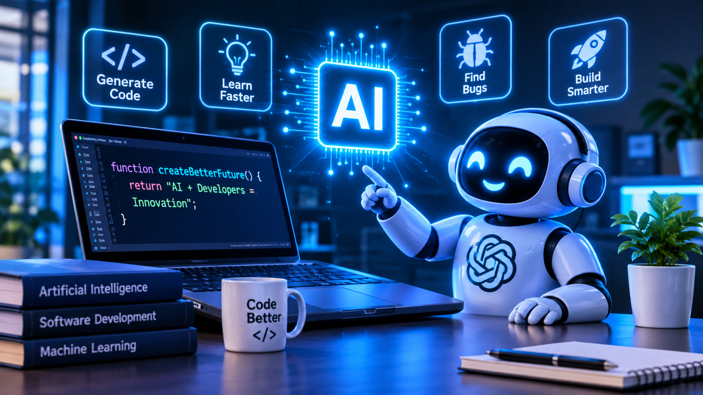

اسم الطالب: حمدي السيد فاروق
الرقم الجامعي: 2500794
المقرر الدراسي: تطبيقات الإنترنت والمنصات الإلكترونية
يُعد الذكاء الاصطناعي التوليدي من أهم التطورات التكنولوجية في السنوات الأخيرة، حيث يستطيع إنشاء النصوص والصور والأكواد البرمجية استجابةً لتعليمات المستخدم. وقد أصبح أداة مساعدة للمطورين في كتابة البرامج وفهم الأكواد واكتشاف الأخطاء.
يهدف هذا التقرير إلى توضيح مفهوم الذكاء الاصطناعي التوليدي، ودوره في تطوير البرمجيات، وأهم استخداماته ومميزاته والتحديات المرتبطة به.
الذكاء الاصطناعي التوليدي هو نوع من تقنيات الذكاء الاصطناعي التي تستطيع إنشاء محتوى جديد، مثل النصوص والصور والأكواد البرمجية، اعتمادًا على البيانات التي تدربت عليها والتعليمات التي يقدمها المستخدم.

يمكن لأدوات الذكاء الاصطناعي اقتراح الأكواد البرمجية وإنشاء الدوال والمساعدة في تنفيذ المهام المتكررة، مما يساهم في توفير الوقت وزيادة كفاءة العمل.
يستطيع الطلاب والمطورون استخدام الذكاء الاصطناعي لفهم الأكواد غير الواضحة، وتعلم لغات البرمجة، والحصول على أمثلة عملية تساعدهم على استيعاب المفاهيم الجديدة.
يمكن للذكاء الاصطناعي المساعدة في اكتشاف الأخطاء البرمجية، وتوضيح أسباب حدوثها، واقتراح حلول مناسبة لها. ومع ذلك، يجب اختبار الحلول المقترحة قبل استخدامها.
يساعد الذكاء الاصطناعي المبتدئين على تعلم تقنيات البرمجة الجديدة، والإجابة عن الأسئلة التقنية، وتقديم تدريبات وأمثلة تطبيقية.
| اسم الأداة | الوظيفة الأساسية | الفائدة |
|---|---|---|
| ChatGPT | شرح الأكواد وإنشاؤها | دعم التعلم وحل المشكلات |
| GitHub Copilot | اقتراح الأكواد البرمجية | المساعدة في إنجاز مهام البرمجة |
| Google Gemini | المساعدة التقنية | توضيح المفاهيم البرمجية وتعلمها |
يجب التعامل مع الذكاء الاصطناعي باعتباره أداة مساعدة للمطور، وليس بديلًا عن المعرفة والخبرة البشرية. وينبغي مراجعة الأكواد الناتجة واختبارها، والحفاظ على سرية المعلومات، واتباع قواعد الأمان البرمجي.
أصبح الذكاء الاصطناعي التوليدي أداة مهمة في مجال تطوير البرمجيات، حيث يساعد في كتابة الأكواد والتعلم واكتشاف الأخطاء وحل المشكلات. وعلى الرغم من فوائده، فإنه قد ينتج معلومات أو أكواد غير صحيحة، لذلك تظل المراجعة البشرية ضرورية. ويساهم الاستخدام المسؤول لهذه الأدوات في تحسين الإنتاجية وتطوير مهارات المبرمجين.